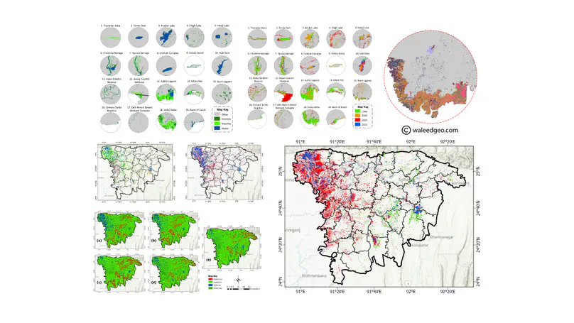
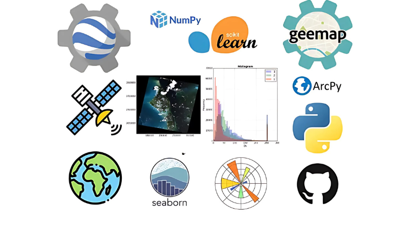

Cartography
Completed
Cartography
Completed
30 Day Map Challenge 2024
30 unique maps created in 30 days covering themes: points, lines, polygons, raster, animations, 3D terrain, and more. Uses QGIS, Python, GEE, and ArcGIS Pro. One of the largest annual global cartography challenges on social media with over 1,000 participants worldwide.
 GEE
Active
GEE
Active
Google Earth Engine Projects
A curated collection of GEE scripts covering NDVI time-series, flood extent mapping with SAR Sentinel-1, LULC classification, and spectral indices. Deployed on the GEE cloud platform for scalable geospatial analysis.
 GeoAI
Active
GeoAI
Active
Machine Learning & AI for GIS
End-to-end GeoAI workflows: Random Forest & SVM for LULC classification, CNN-based object detection on satellite imagery, and flood susceptibility modeling using ensemble methods on multi-source spatial data.
 Visualization
Completed
Visualization
Completed
30 Day Python DataViz Challenge
30 geospatial visualizations using pure Python: animated choropleth maps, 3D terrain renders, interactive Folium web maps, and statistical plots — all built with Matplotlib, Seaborn, GeoPandas, and Folium.
 Geospatial
Active
Geospatial
Active
GIS & Spatial Analysis Toolkit
A comprehensive toolkit of GIS and remote sensing analysis scripts: spatial statistics, change detection, image classification, raster processing, and vector analysis — all documented and ready for reuse.

 Flood Mapping
Completed
Flood Mapping
Completed
Pakistan Floods 2022 — SAR Flood Mapping
Mapped the 2022 Pakistan catastrophic flood extent using Sentinel-1 SAR imagery in GEE. Applied threshold-based water detection and change detection methods to quantify inundated areas across Sindh and Balochistan provinces.
 LULC
Completed
LULC
Completed
LULC Change Detection & Classification
Multi-temporal LULC classification using Landsat 8/9 and Sentinel-2 in GEE. Applied Random Forest classifier achieving 92% OA. Analyzed change trajectories across agricultural, urban, forest, and water classes from 2000–2024.
 Climate
In Progress
Climate
In Progress
Climate Change Monitoring — Rawal Dam
Analyzing hydrological and operational changes in Rawal Dam using MODIS NDWI time-series, rainfall data, and land use change detection. Correlating climate variables with dam water levels from 2000 to 2024.

Wetlands CompletedWetlands Mapping & Nature Resource Analysis
Mapped and monitored wetland extent and health using Sentinel-2 MNDWI, NDWI, and spectral indices in GEE. Assessed seasonal dynamics and anthropogenic pressures on wetland ecosystems across Pakistan.
 Urbanization
Completed
Urbanization
Completed
Urban Growth Monitoring & Heat Island Analysis
Analyzed 20-year urban expansion of Rawalpindi-Islamabad using Landsat time-series. Quantified impervious surface growth, green space loss, and Urban Heat Island (UHI) intensity using LST analysis and NDBI index.

Open Source ActiveOpen Source GIS & Remote Sensing Tools
A collection of open-source Python utilities and GEE scripts for the geospatial community: batch raster processors, spatial data converters, automated reporting tools, and interactive Streamlit dashboards.
More projects on GitHub
Browse all repositories including GEE scripts, QGIS plugins, Python tools, and ongoing research.